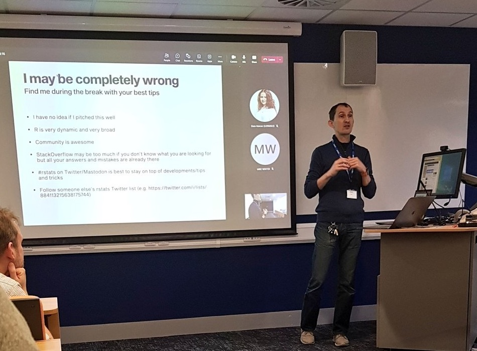

My presentation at the Northern BUG
In January 2023, I gave a short talk at the 8th meeting of the Northern Bioinformatics User Group (nBUG for short), which is an informal network of computational biologists and users or bioinformatics services in the (loosely defined) north of England. If you haven’t heard about us and are in range of a reasonable commute, please come to one of our next meetings (we have three one-day, single-track meetings per year), it’s really nice :-).
My talk wasn’t actually that short, as I ran over time and could not finish it properly. My excuse is that I was juggling a presentation (with slides), a live demo in R Studio and sharing my screen over Teams, over a single projector.
Anyway, I think this is a very good reason to write my short presentation as a blog post.
Who may find this useful?
When I thought about the target audience of the talk, I had in mind postgraduate students, who had already done some work in R and are familiar with the basics of the language (e.g. various data types, loading data, working in R Studio), but who may not have thought about how to organise their data and scripts, or be aware of really simple tricks that would make their work much more effective and efficient. I didn’t really know whether this was the right pitch, but a few post-talk comments indicated it was a good one.

Here we go.
1. Use projects + here + Rmd/Qmd for everything
2. Name things well
3. Five or six packages that will make your life so much easier
I also wanted to mention several packages with functions that, in my opinion, really make data wrangling and running statistics (pretty much 90% of what my imaginary target audience wants to do) much easier. Here are the best of:
- datapasta by Miles McBain. It’s an R Studio addin that lets you easily copy-paste basic data structures into R (e.g. vectors and tables), skipping the formatting and importing steps. Here is an animated GIF from the linked website that explains it better:

I use it quite often, also to create dummy data to test various functions or try to understand what’s going on with my code.
janitor by Sam Firke. Probably the most popular of the basic data wrangling packages, with its blockbuster function
clean_names(), which standardises messy column names by substituting spaces, normalising font cases and protecting from having names starting with a number or other forbidden symbol. But it also has a functionget_dupes()that identifies duplicated rows/variables in the data and a functiontabyl()that prettifies tables, including adding rows with totals or formatting the tables as inputs to statistical tests such as χ2.rsatix by Alboukadel Kassambara and easystats by Daniel Lüdecke et al.